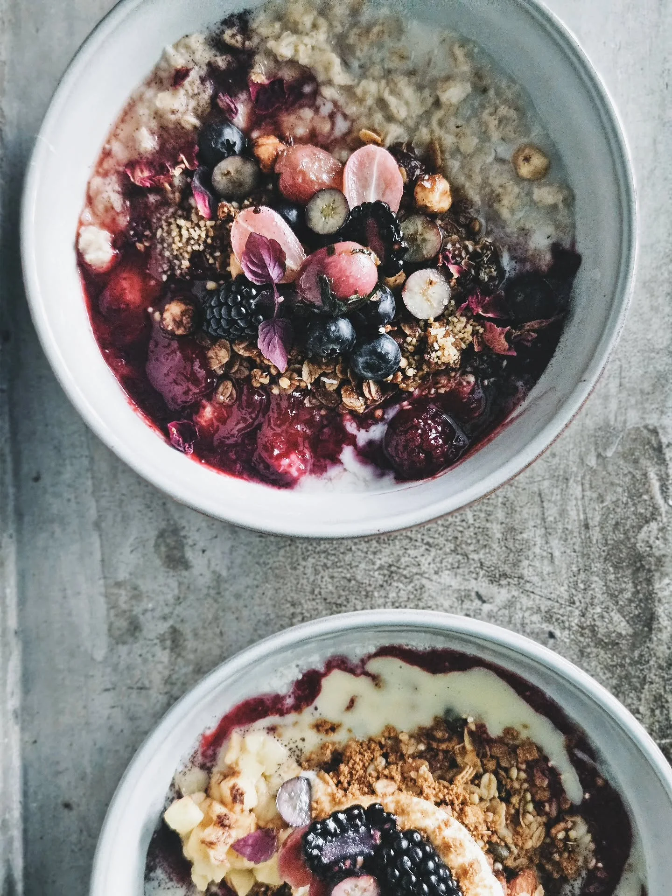
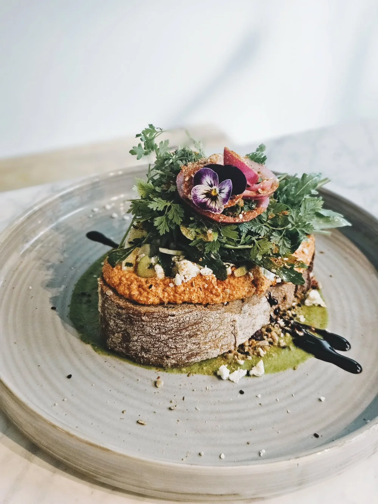
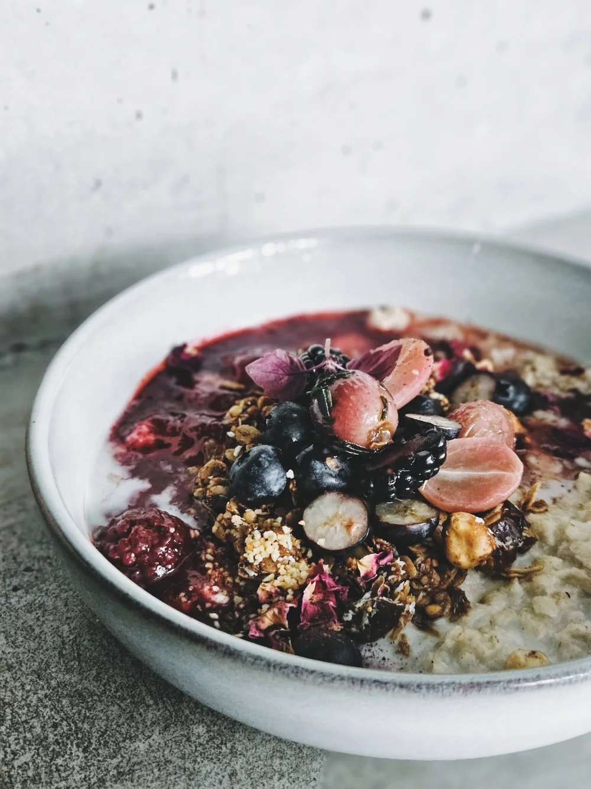
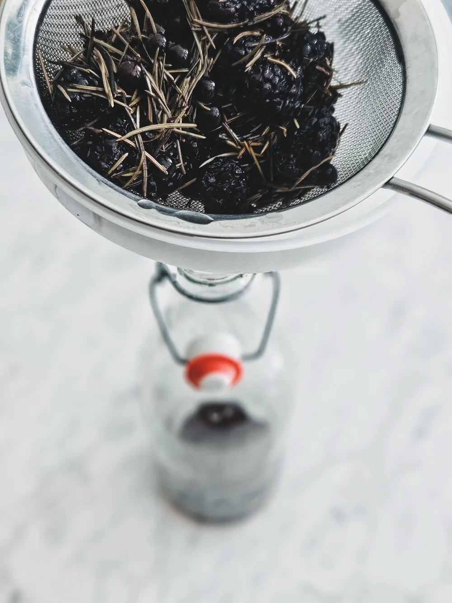
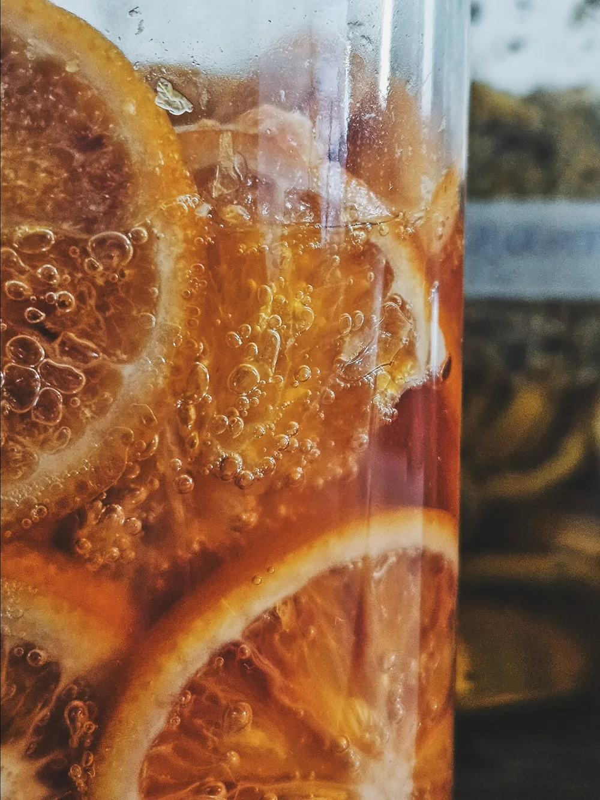
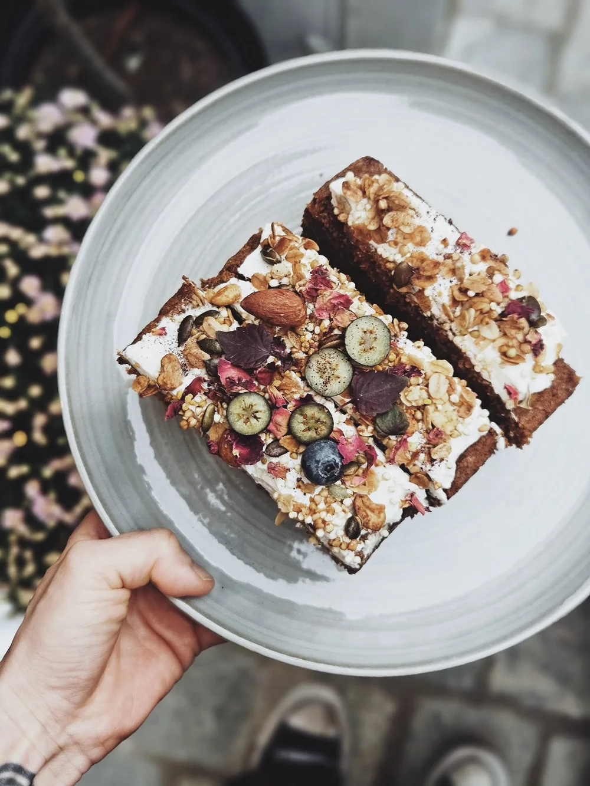

funky. casual. no fuzz.
Ontbijt en lunch aan 26 plaatsen. Alles maken we zelf, van de granola tot de kombucha. Reserveren hoeft niet: je wandelt gewoon binnen en schuift aan.
4,8 op Google uit 136 reviews



comfortfood, voor ieder wat wils.
Onze kaart draait mee met het seizoen. Nu is het herfst, dus komen er warme kommen, compote en koekskes uit de oven. Dit stond de voorbije weken op tafel.



zelf gebrouwen en gegist.
Wat je bij ons drinkt, staat eerst maanden te trekken. Kneusjes fruit uit de keuken, kruiden en specerijen gaan op suiker en worden een siroopje. Geen poeders, geen synthetische smaakjes.

1op suiker
Voor onze cheong gaat er van alles en nog wat op suiker. Deze met sparrennaaldjes en bramen staat er al sinds eind vorig jaar.
 2
2door de zeef
Zo maken we ook onze pumpkin spice siroop: met echte specerijen, zonder poederkes.

3in je glas
De kombucha brouwen we zelf en gaat voor een tweede fermentatie op onze eigen cheong. Daarna is hij klaar voor jou.
"pumpkin spice siroop. jawel, die maken we zelf, zonder poederkes of van dieje synthetische tuggel. en da proeft ge."
- kombucha
- zelf gebrouwen, tweede fermentatie op cheong
- pumpkin spice latte
- met onze eigen siroop, of als melkske zonder koffie
- in de zomer
- passievrucht-ijsthee en granaatappellimonade


"de borden zijn net kunstwerken."
"Deze ontbijt/lunch plek kan ik iedereen aanraden. De borden zijn net kunstwerken, niet alleen mooi maar nog super lekker ook. Alles is huisgemaakt, zelfs tot en met de Kombucha die ze zelf brouwen."
Jack Vanaudenhove op Google
"De allerliefste mensen die deze zaak uitbaten, enorm veel passie voor lekker eten en een huiselijke liefdevolle sfeer!"
"Als je graag eens iets anders dan "standaard" wil eten ben je hier aan het goede adres. Het eten wordt er met veel liefde klaargemaakt."
4,8gemiddeld op Google,
uit 136 reviews
't gezelligste straatje van diest.
Zo noemen wij de Ketelstraat. Je vindt ons op nummer 22, en bij goed weer staat er ook een terrasje buiten.
- reserverenKan niet, en hoeft ook niet. Je wandelt binnen en neemt een plekje.
- plaats26 stoelen, groot en klein. Ook de kleinste gasten zijn welkom.
- di tot vr8u30 tot 17u
- zaterdag9u tot 17u
- zo en maGesloten
Ketelstraat 22, 3290 Diest